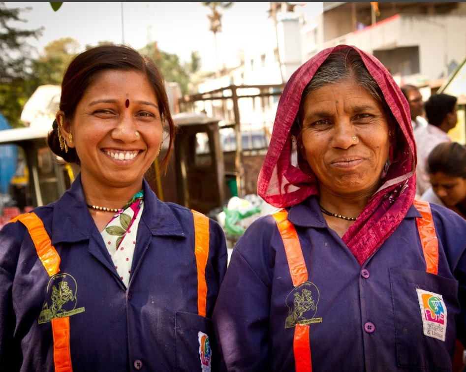
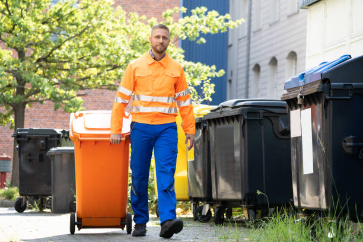

What is waste management?
Waste management refers to the collection, transportation, processing, recycling, and disposal of waste materials. These materials come from various sources, including residential, industrial, commercial, and agricultural activities. The primary goal of waste management is to handle waste in a way that minimizes its adverse effects on the environment, human health, and aesthetics. Effective waste management practices help in reducing pollution, conserving resources, and achieving sustainable development.
Waste management involves several key processes:
- Collection: Gathering waste from residential, commercial, and other facilities.
- Transportation: Moving the collected waste to processing, recycling, or disposal sites.
- Processing and Treatment: Converting waste into more useful materials or reducing its volume and harmfulness through methods like composting, incineration, or mechanical biological treatment.
- Recycling: Separating, collecting, and processing materials from waste to create new products, thereby conserving resources and reducing the need for raw materials.
- Disposal: Safely getting rid of waste that cannot be recycled or treated, typically in landfills or through controlled incineration.

Waste management systems vary widely around the world, influenced by economic, environmental, political, and cultural factors. In many developed countries, sophisticated waste management practices including curbside collection, recycling programs, and advanced waste treatment technologies are in place. In contrast, developing countries may struggle with inadequate waste management infrastructure, leading to environmental pollution and public health issues.
Sustainable waste management focuses on reducing waste generation, maximizing recycling and reuse, and ensuring the environmentally safe disposal of residual waste. This approach aligns with the principles of the circular economy, which aims to keep resources in use for as long as possible, extract the maximum value from them while in use, and recover and regenerate products and materials at the end of their service life.
Waste management encompasses a comprehensive approach to dealing with waste materials, ranging from their inception to final disposal. This includes the collection, transport, treatment, and disposal of waste, along with monitoring and regulation. It also encompasses the legal and regulatory framework that relates to waste management encompassing guidance on recycling.

The foundation of effective waste management is to prevent the generation of waste. This can be achieved through various means such as reducing material use, redesigning products to use less material, and changing societal patterns of consumption.